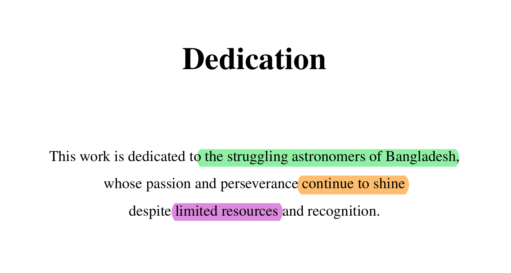

Astronomy and the Prisoner of Bangladeshi Thesis
As some of you know, I am currently enrolled as an undergrad at Shahjalal University of Science and Technology, Bangladesh majoring in Electrical and Electronic Engineering. But my area of interest was in astronomical data filtering, modelling and analysis. Specifically I worked on Transiting Exoplanets Data. Defending my thesis felt like navigating Mirpur’s legendary roads: every step jolted by unexpected potholes, but somehow I still reached the destination. I'll be sharing my journey in this blog and may eventually suggest you some dos and don'ts if you are planning to take a thesis on astronomy from Bangladesh from an engineering background.
Selecting Supervisor
If you are an engineering student and hoping to do your thesis in astronomy, GOOD LUCK! üò™ In Bangladesh, many undergraduates don‚Äôt get the opportunity to propose their own problem statement or work on their area of interest. Sometimes, the thesis supervisor is assigned by lottery and you must work on whatever topic they choose without much say in the matter.
But if you do get a choice (and you must create one) then choose a supervisor who is flexible, empathetic and allows you freedom in your research. Here’s what worked for me: I immersed myself in research papers on a specific field of astronomy namely exoplanets and prepared a presentation summarizing the literatures and a potential problem statement. I then approached my supervisor with this, showing my passion and progress with regular updates. I was fortunate enough that my dedication paid off and he agreed to supervise my work on exoplanets.
Readings
After you have finalized your area of interest, the next step is to read the related literatures. One thing is you can search related papers on Google Scholar or on NASA ADS or you can directly ask LLMs like Perplexity AI to give you the related papers. For this specific task, Perplexity works better than ChatGPT in my experience.
❌ Don't: Read research papers at your infancy. You will not understand most of the jargons
and it'll make you feel like you are not cut out for this.
✅ Do: Read thesis papers on related topics. They are usually written in a more
beginner-friendly way and will help you understand the basics of the field.
Track Progress
Most students start their thesis when the defense date is knocking at the door. It's a very bad idea. Present your progress (even if it's small) to your supervisor on a weekly or bi-weekly basis. Create a project tracker on google docs to keep the meeting minutes and related suggestions from your supervisor.
Reference Management
Use a reference management tool like Zotero or Mendeley to keep track of your references. It will save you a lot of time and effort when writing your thesis. I personally used Mendeley and it worked great for me.
Visualization
I am assuming that you'll use python for your astronomy research. Use libraries like Matplotlib or Seaborn for data visualization. Make the images look academic and professional. You can follow this video to create publication-ready figures: Principles of Beautiful Figures for Research Papers . Save the figures in pdf format for better quality and smaller file size. You should be careful that, if the figures are too large, Overleaf may not compile your LaTex codes.
Don't Lose Hope!
As Emily Dickinson said, Hope is the thing with feathers. Be prepared that most of the people around you will not understand your work. They may even discourage you. They may mock you during your defense. But don't lose hope.
"And, when you want something, all the universe conspires in helping you to achieve it."
— Paulo Coelho, The Alchemist